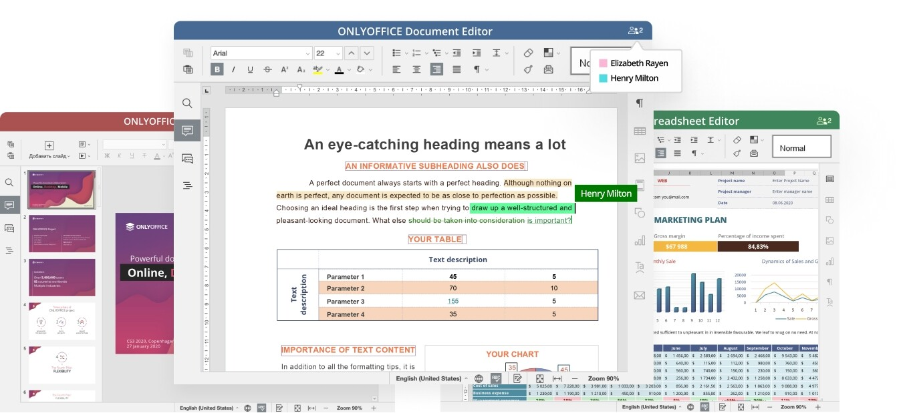
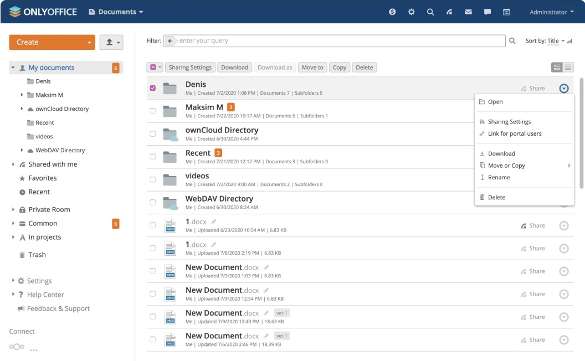
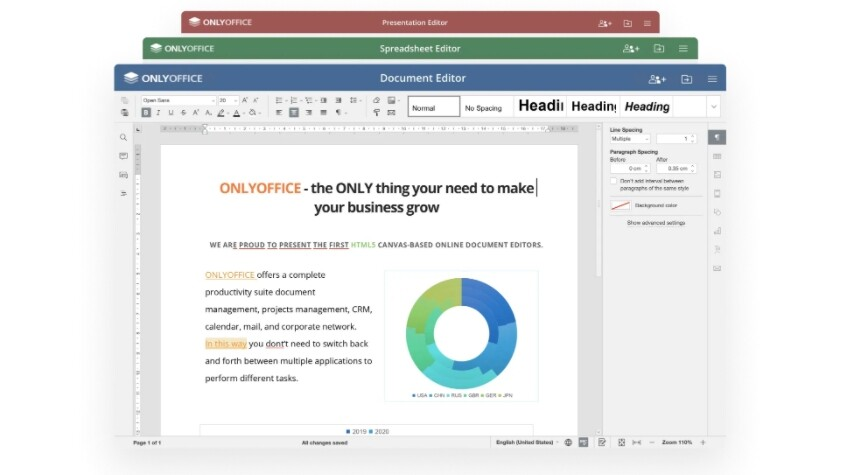

OnlyOffice Workspace es la nueva suite profesional de código abierto que quiere competir con Google Drive y Office 365
El Office 365 de Microsoft tiene un nuevo competidor de código abierto. La empresa letona Asencio System es conocida por OnlyOffice, una suite ofimática online de código abierto, y ha anunciado el lanzamiento de OnlyOffice Workspace, un nuevo producto que busca posicionarse como un competidor de Office y Google Docs en el campo del trabajo colaborativo.
De hecho, este nuevo producto también incluye una plataforma gratuita para gestionar todos los procesos de los negocios online y la edición colaborativa de documentos. OnlyOffice Workplace tiene dos componentes principales, uno para la gestión colaborativa de documentos y otro que es el propio editor de código abierto.
Para que quede claro, el producto anunciado es nuevo, aunque está compuesto de otros dos productos que ya llevan tiempo siendo desarrollados por Asencio System. Además, Workspace podrás utilizarlo directamente en la nube o instalarlo en tu servidor de empresa.
Esto es lo que ofrece OnlyOffice Workspace
Por una parte, el primer producto incluido en OnlyOffice Workspace es OnlyOffice Groups, la plataforma de colaboración para la gestión de documentos, proyectos, correos electrónicos y relación con los clientes. Todo a través del navegador. Este producto ha llegado a su versión 11.0, que se distribuye con la licencia Apache 2.0 que permite que cualquier usuario con conocimientos pueda coger su código y modificarlo a su antojo.
Se combina con el Panel de Control, que hasta ahora solo estaba disponible para usuarios empresariales, y ahora ha sido llevada también a la versión de código abierto. Incluye herramientas para configurar Groups en el servidor del usuario que quiera usarlo, y administrarlos de forma sencilla con copias de seguridad, monitorización de actividades, búsquedas de texto o acceso con SSO/LDAP.También permite usar la plataforma bajo cualqueir marca, con sus capacidades "de marca blanca".
Y el segundo producto incluido es OnlyOffice Docs, que es el editor online de documentos para archivos de texto, hojas de cálculo y presentaciones. Es, por lo tanto, una suite parecida a la de Google Drive, y totalmente compatible con los formatos nativos de Microsoft Office.
En la nueva versión de Docs, la 6.0, se han introducido novedades como tablas dinámicas para ayudar a analizar datos y encontrar patrones, o segmentaciones de datos para tablas con formato. También se permite la eliminación de duplicados en hojas de cálculos, algo que puede hacerse automáticamente cuando introduces algunos registros más de una vez o combinas los de diferentes fuentes.
OnlyOffice Workspace tiene opciones de privacidad y la posibilidad de cifrar el almacenamiento con bloques de datos de 128 bits usando claves simétricas de 256 bits. Además, el módulo de documentos ofrece la función de salas privadas para poder colaborar en equipo en un entorno cifrado usando el algoritmo AES-256, incluso mientras co-editas documentos en tiempo real.
Otra medida de seguridad implementada es el denominado Filtro Personalizado, que está especialmente dirigido a las hojas de cálculo con datos de clasificación en tiempo real. Los usuarios podrán editar la hoja sin que los cambios les aparezcan a los demás en tiempo real, haciendo así que el trabajo colaborativo sea un poco menos confuso. Los cambios tampoco se guardarán automáticamente en el archivo, y se permitirá elegir qué datos no quieres que le aparezcan a las personas antes de compartir una hoja de cálculos.
Además, la suite ofimática también ha implementado opciones como una mejor navegación en el sistema de gestión de documentos, poder crear favoritos o una sección de recientes. También se puede conectar con el almacenamiento en la nube kDrive, y configurar la obtención de notificaciones pudiendo enviarlas incluso por Telegram.
A todo esto, hay que añadirle otras opciones clásicas dentro de los productos de esta empresa, y que también se implementan en Workspace. Por ejemplo, tienes un cliente de correo y un chat para que puedas comunicarte con otros miembros de tu grupo de trabajo o empresa.
Si quieres probar esta suite, tienes en este enlace la versión gratuita para la comunidad. Y si tienes una empresa y te interesa su versión empresarial de pago, aquí puedes descargar la versión de pruebas.